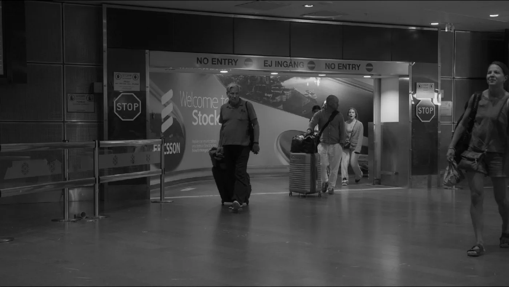
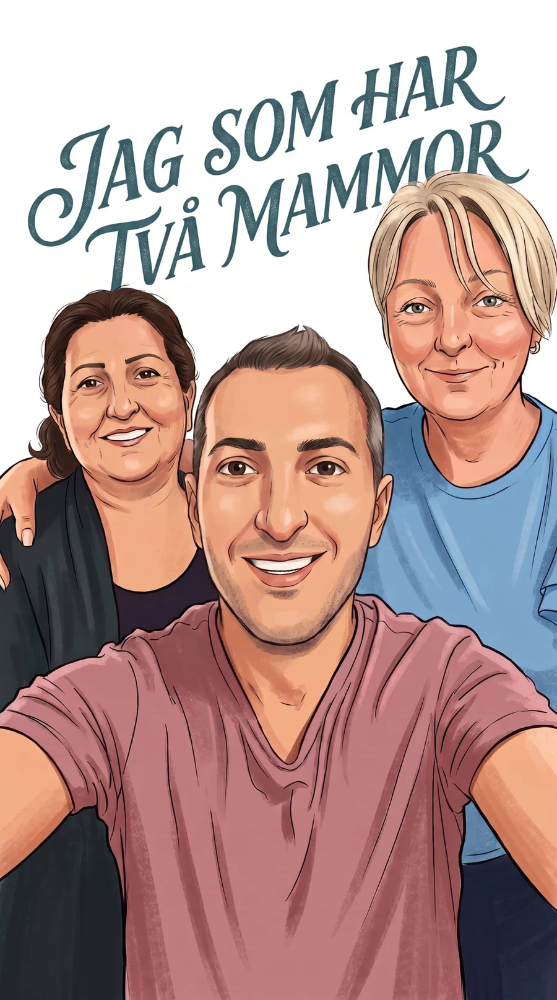
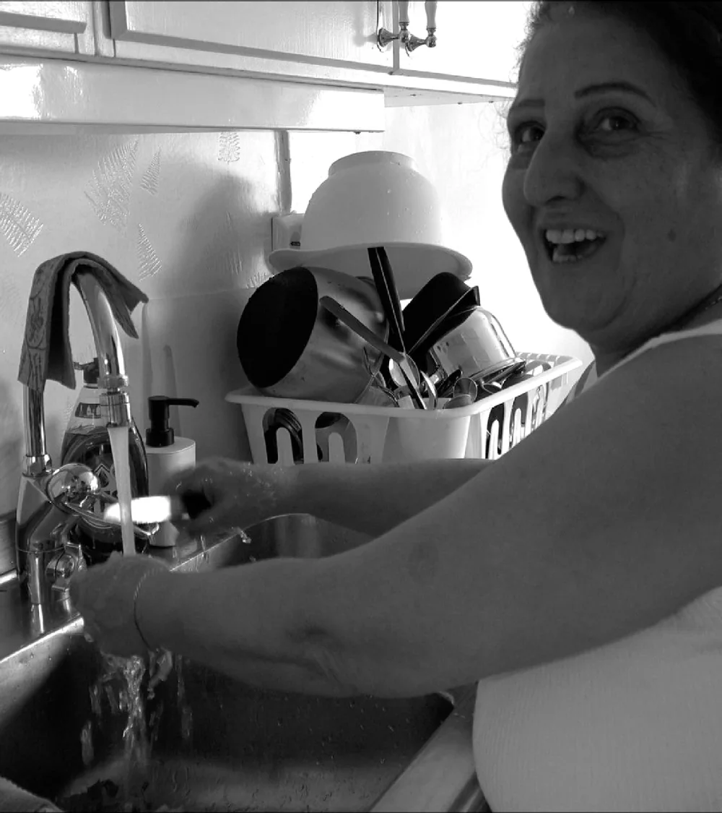
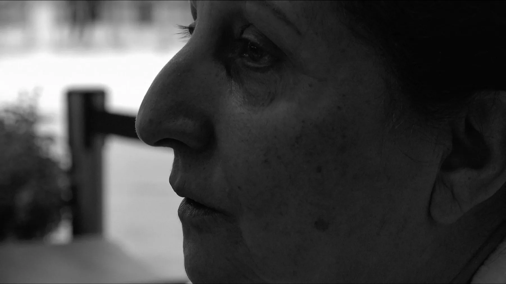
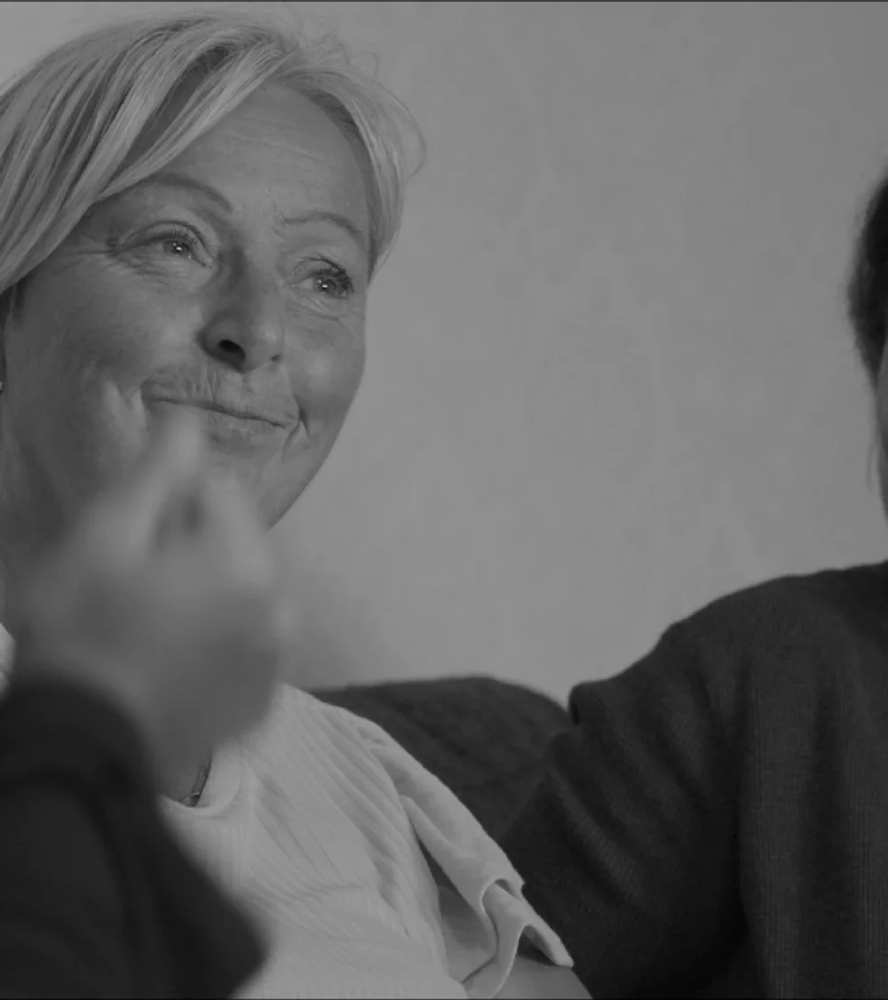
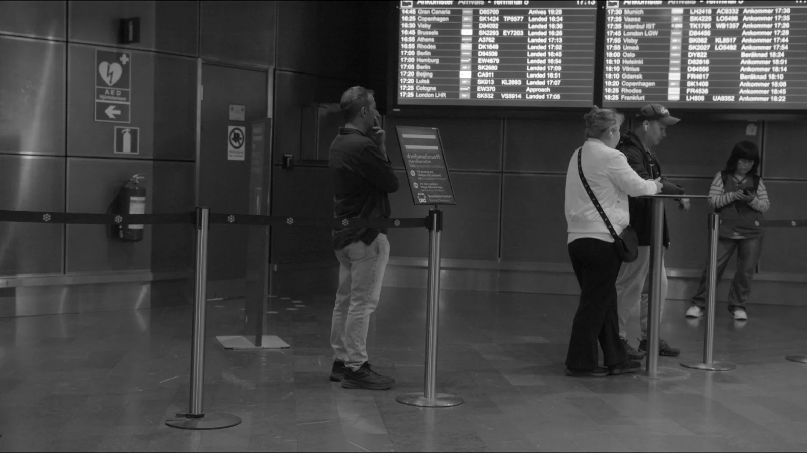
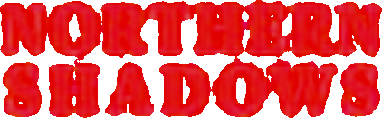

En trilogi
om migration och integration
Jag som har två mammor är den andra filmen jag arbetar med, efter Birds of Passage, i en trilogi med annorlunda och unika perspektiv på migration och integration. Filmerna skildrar människan som människa — inte som en fråga.
- Birds of Passage
- Jag som har två mammor
- Där och Här, Då och Nu

Filmen
Två kvinnor. En biologisk mamma på andra sidan jordklotet, och en som kom in i familjen och stannade.
Filmen utforskar hur oväntade band kan bli de starkaste — och vad två mammor gör med en berättelse om tillhörighet.

Fedaa
Min mamma. Kriget och regimen skilde oss åt, och det vi har kvar är samtal över tidszoner och besök som tar slut. I filmen är hon både närvarande och långt borta.


Birgitta
Birgitta kom in i mitt liv som stödperson till mina döttrar. Med åren har hon blivit en slags modersfigur — för mig och för mina två döttrar.


Avståndet
Min biologiska mamma Fedaa hamnade i Australien efter kriget i Syrien. Familjen finns kvar — men på andra sidan jordklotet.
Vad betyder familj när man förlorat sitt ursprung?
Status och process
Projektet är i en utforskande fas — jag samlar material. Jag vet vad jag vill säga, men låter filmen växa fram i sin egen takt.
Research och utveckling sker med Sydsvenska Filmkreatörer. Premiären är beräknad till 2028.
Regissören
Bergman Talangdagar
Filmregissör i Sverige sedan 2013, kommer från Syrien. Driver produktionsbolaget STEP1FILM.

